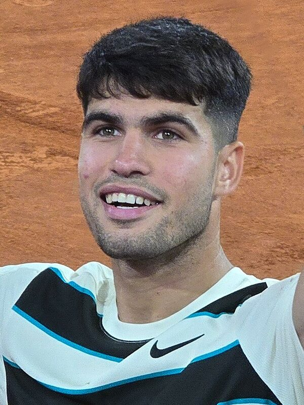

Carlos Alcaraz

- Age: 23, born 5 May 2003 in El Palmar, Spain
- Started tennis at: 4 years old
- Height and weight: 1.83 m, 74 kg
- Major competitions won: 7 Grand Slam singles titles
- Current ATP ranking: No. 3, after losing four months of the season to a wrist injury. 66 weeks at No. 1 so far